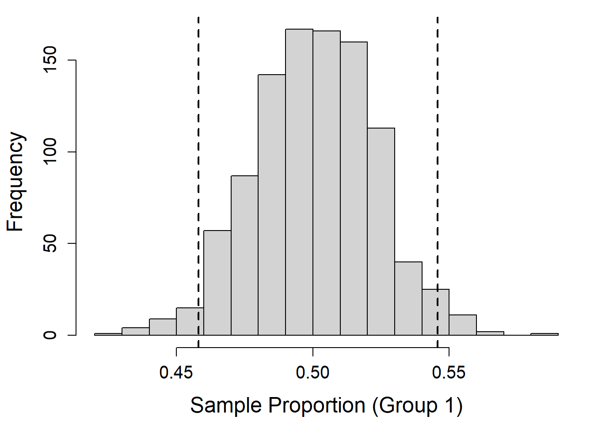
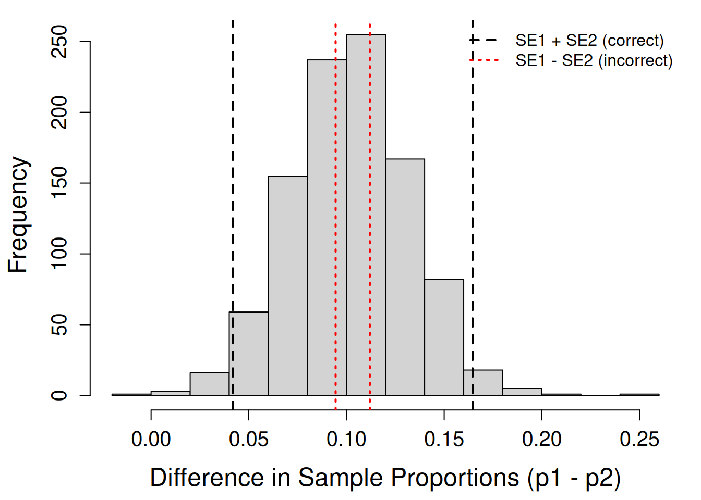

set.seed(1) # ensures reproducibility
B <- 1000 # number of simulations
n <- 500 # sample size per group
p1 <- 0.5 # true proportion in group 1
p2 <- 0.4 # true proportion in group 2
# Create empty vectors to store simulated means and SDs
mean_x1 <- mean_x2 <- numeric(B)
sd_x1 <- sd_x2 <- numeric(B)
# Loop to simulate samples for both groups
for (i in 1:B) {
# Generate random binary outcomes for group 1 (success = 1, failure = 0)
x1 <- rbinom(n, size = 1, prob = p1)
mean_x1[i] <- mean(x1) # sample proportion for group 1
sd_x1[i] <- sd(x1) # sample SD for group 1
# Repeat for group 2
x2 <- rbinom(n, size = 1, prob = p2)
mean_x2[i] <- mean(x2)
sd_x2[i] <- sd(x2)
}
# Theoretical standard error for a sample proportion
sqrt(p1*(1-p1)/n)[1] 0.02236068# Empirical standard error from simulated data
mean(sd_x1) / sqrt(n)[1] 0.0223613# Compute 95% confidence bounds around the sampling mean
ub_x1 <- mean(mean_x1) + 1.96 * sqrt(p1*(1-p1)/n)
lb_x1 <- mean(mean_x1) - 1.96 * sqrt(p1*(1-p1)/n)
# Plot histogram of simulated sample proportions
par(mar = c(4.5, 4.5, 1, 1))
hist(mean_x1, breaks = 12,
main = "",
xlab = "Sample Proportion (Group 1)",
cex.axis = 1.25, cex.lab = 1.5)
abline(v = c(lb_x1, ub_x1), lty = 2, lwd = 2) # add CI bounds
# Compute simulated differences
diff <- mean_x1 - mean_x2
# Theoretical SE for the difference in proportions
sqrt(p1*(1-p1)/n + p2*(1-p2)/n)[1] 0.03130495# Empirical SE estimate (not exact but illustrative)
mean(sd_x1 + sd_x2) / sqrt(n + n)[1] 0.03129505# Compute 95% CIs using correct (additive) and incorrect (subtractive) formulas
## correct
ub_diff_1 <- mean(diff) + 1.96 * sqrt(p1*(1-p1)/n + p2*(1-p2)/n)
lb_diff_1 <- mean(diff) - 1.96 * sqrt(p1*(1-p1)/n + p2*(1-p2)/n)
## incorrect
ub_diff_2 <- mean(diff) + 1.96 * sqrt(p1*(1-p1)/n - p2*(1-p2)/n)
lb_diff_2 <- mean(diff) - 1.96 * sqrt(p1*(1-p1)/n - p2*(1-p2)/n)
# Visualize sampling distribution of the difference
hist(diff, breaks = 12,
main = "",
xlab = "Difference in Sample Proportions (p1 - p2)",
cex.axis = 1.25, cex.lab = 1.5)
# Add both sets of CI bounds
abline(v = c(lb_diff_1, ub_diff_1), lty = 2, lwd = 2)
abline(v = c(lb_diff_2, ub_diff_2), lty = 3, lwd = 2, col = "red")
# legend
legend("topright",
legend = c("SE1 + SE2 (correct)", "SE1 - SE2 (incorrect)"),
lwd = 2, lty = c(2, 3),
col = c("black", "red"),
bty = "n")
# Check coverage rates for both formulas
mean(ifelse(diff >= ub_diff_1 | diff <= lb_diff_1, 1, 0))[1] 0.037mean(ifelse(diff >= ub_diff_2 | diff <= lb_diff_2, 1, 0))[1] 0.793